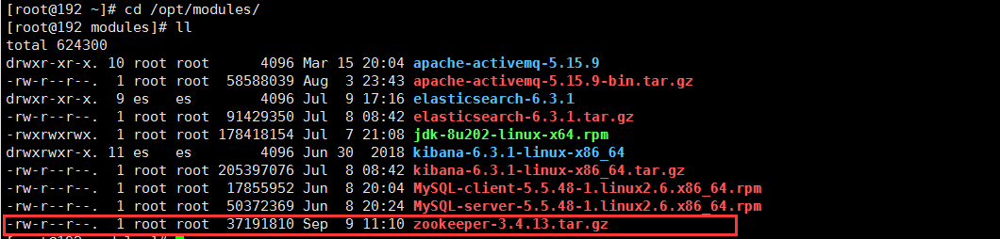

Zookeeper运行需要java环境，需要安装jdk，建议本地下载好需要的安装包然后上传到服务器上面，服务器上面下载速度太慢。
[root@192 ~]# java -version
java version "1.8.0_202"
Java(TM) SE Runtime Environment (build 1.8.0_202-b08)
Java HotSpot(TM) 64-Bit Server VM (build 25.202-b08, mixed mode)
[root@192 modules]# tar -zxvf zookeeper-3.4.13.tar.gz -C /opt/soft/[root@192 soft]# cp -r zookeeper-3.4.13/ zookeeper1
[root@192 soft]# cp -r zookeeper1 zookeeper2
[root@192 soft]# cp -r zookeeper1 zookeeper3
[root@192 soft]# ll
total 16
drwxr-xr-x. 12 root root 4096 Sep 9 14:44 zookeeper1
drwxr-xr-x. 12 root root 4096 Sep 9 14:45 zookeeper2
drwxr-xr-x. 12 root root 4096 Sep 9 14:46 zookeeper3
drwxr-xr-x. 12 501 games 4096 Sep 9 14:51 zookeeper-3.4.13zookeeper1配置文件[root@192 conf]# mv zoo_sample.cfg zoo.cfg
[root@192 conf]# ll
total 20
-rw-r--r--. 1 root root 535 Sep 9 11:38 configuration.xsl
-rw-r--r--. 1 root root 2161 Sep 9 11:38 log4j.properties
-rw-r--r--. 1 root root 285 Sep 9 15:03 zoo.cfg
-rw-r--r--. 1 root root 2306 Sep 9 11:48 zookeeper.out
-rw-r--r--. 1 root root 922 Sep 9 11:38 zoo_sample.cfg
[root@192 conf]# vim zoo.cfg
[root@192 conf]# cat zoo.cfg
tickTime=2000
initLimit=10
syncLimit=5
dataDir=/opt/soft/zookeeper1/data
dataLogDir=/opt/soft/zookeeper1/logs
clientPort=2181
autopurge.snapRetainCount=500
autopurge.purgeInterval=24
server.1= 192.168.1.101:2888:3888
server.2= 192.168.1.101:2889:3889
server.3= 192.168.1.101:2890:3890
[root@192 conf]# zookeeper2配置文件[root@192 conf]# cat /opt/soft/zookeeper2/conf/zoo.cfg
tickTime=2000
initLimit=10
syncLimit=5
dataLogDir=/opt/soft/zookeeper2/logs
dataDir=/opt/soft/zookeeper2/data
clientPort=2182
autopurge.snapRetainCount=500
autopurge.purgeInterval=24
server.1= 192.168.1.101:2888:3888
server.2= 192.168.1.101:2889:3889
server.3= 192.168.1.101:2890:3890
zookeeper3配置文件[root@192 conf]# cat /opt/soft/zookeeper3/conf/zoo.cfg
tickTime=2000
initLimit=10
syncLimit=5
dataLogDir=/opt/soft/zookeeper3/logs
dataDir=/opt/soft/zookeeper3/data
clientPort=2183
autopurge.snapRetainCount=500
autopurge.purgeInterval=24
server.1= 192.168.1.101:2888:3888
server.2= 192.168.1.101:2889:3889
server.3= 192.168.1.101:2890:3890
[root@192 ~]# egrep -v "^#|^$" /opt/soft/zookeeper1/conf/zoo.cfg
tickTime=2000
initLimit=10
syncLimit=5
dataDir=/opt/soft/zookeeper1/data
dataLogDir=/opt/soft/zookeeper1/logs
clientPort=2181
autopurge.snapRetainCount=500
autopurge.purgeInterval=24
server.1= 192.168.1.101:2888:3888
server.2= 192.168.1.101:2889:3889
server.3= 192.168.1.101:2890:3890
[root@192 ~]# egrep -v "^#|^$" /opt/soft/zookeeper2/conf/zoo.cfg
tickTime=2000
initLimit=10
syncLimit=5
dataLogDir=/opt/soft/zookeeper2/logs
dataDir=/opt/soft/zookeeper2/data
clientPort=2182
autopurge.snapRetainCount=500
autopurge.purgeInterval=24
server.1= 192.168.1.101:2888:3888
server.2= 192.168.1.101:2889:3889
server.3= 192.168.1.101:2890:3890
[root@192 ~]# egrep -v "^#|^$" /opt/soft/zookeeper3/conf/zoo.cfg
tickTime=2000
initLimit=10
syncLimit=5
dataLogDir=/opt/soft/zookeeper3/logs
dataDir=/opt/soft/zookeeper3/data
clientPort=2183
autopurge.snapRetainCount=500
autopurge.purgeInterval=24
server.1= 192.168.1.101:2888:3888
server.2= 192.168.1.101:2889:3889
server.3= 192.168.1.101:2890:3890| 参数 | 说明 |
|---|---|
tickTime=2000 |
这个时间是作为zookeeper服务器之间或客户端与服务器之间维持心跳的时间间隔,也就是说每个tickTime时间就会发送一个心跳 |
initLimit=10 |
这个配置项是用来配置zookeeper接受客户端（这里所说的客户端不是用户连接zookeeper服务器的客户端,而是zookeeper服务器集群中连接到leader的follower服务器）初始化连接时最长能忍受多少个心跳时间间隔数。当已经超过 10个心跳的时间（也就是tickTime）长度后 zookeeper服务器还没有收到客户端的返回信息,那么表明这个客户端连接失败。总的时间长度就是10*2000=20秒 |
syncLimit=5 |
这个配置项标识leader与follower之间发送消息,请求和应答时间长度,最长不能超过多少个tickTime的时间长度,总的时间长度就是5*2000=10秒 |
dataDir=/opt/soft/zookeeper1/data |
zookeeper保存数据的目录,默认情况下zookeeper将写数据的日志文件也保存在这个目录里； |
dataLogDir=/opt/soft/zookeeper1/logs |
zookeeper保存日志文件数据 |
clientPort=2181 |
这个端口就是客户端连接Zookeeper服务器的端口,Zookeeper会监听这个端口接受客户端的访问请求 |
server.1= 192.168.1.101:2888:3888 |
server.A=B:C:D中的A是一个数字,表示这个是第几号服务器,B是这个服务器的IP地址，C第一个端口用来集群成员的信息交换,表示这个服务器与集群中的leader服务器交换信息的端口，D是在leader挂掉时专门用来进行选举leader所用的端口。 |
[root@192 ~]# mkdir -p /opt/soft/zookeeper1/{data,logs}
[root@192 ~]# mkdir -p /opt/soft/zookeeper2/{data,logs}
[root@192 ~]# mkdir -p /opt/soft/zookeeper3/{data,logs}
[root@192 ~]# echo "1">/opt/soft/zookeeper1/data/myid
[root@192 ~]# echo "2">/opt/soft/zookeeper2/data/myid
[root@192 ~]# echo "3">/opt/soft/zookeeper3/data/myid
[root@192 ~]# cat /opt/soft/zookeeper1/data/myid
1
[root@192 ~]# cat /opt/soft/zookeeper2/data/myid
2
[root@192 ~]# cat /opt/soft/zookeeper3/data/myid
3
[root@192 ~]# myid中的值对应server.A=B:C:D中的A
[root@192 ~]# vim /etc/profile
#jdk
export JAVA_HOME=/usr/java/jdk1.8.0_202-amd64
export PATH=$PATH:$JAVA_HOME/bin
export CLASSPATH=.:$JAVA_HOME/jre/lib/rt.jar:$JAVA_HOME/lib/dt.jar:$JAVA_HOME/lib/tools.jar
# append zk1_env
export PATH=$PATH:/opt/soft/zookeeper1/bin
# append zk2_env
export PATH=$PATH:/opt/soft/zookeeper2/bin
# append zk3_env
export PATH=$PATH:/opt/soft/zookeeper3/bin
[root@192 ~]# /opt/soft/zookeeper1/bin/zkServer.sh start
ZooKeeper JMX enabled by default
Using config: /opt/soft/zookeeper1/bin/../conf/zoo.cfg
Starting zookeeper ... STARTED
[root@192 ~]# /opt/soft/zookeeper1/bin/zkServer.sh status
ZooKeeper JMX enabled by default
Using config: /opt/soft/zookeeper1/bin/../conf/zoo.cfg
Error contacting service. It is probably not running.
[root@192 ~]# /opt/soft/zookeeper2/bin/zkServer.sh start
ZooKeeper JMX enabled by default
Using config: /opt/soft/zookeeper2/bin/../conf/zoo.cfg
Starting zookeeper ... STARTED
[root@192 ~]# /opt/soft/zookeeper1/bin/zkServer.sh status
ZooKeeper JMX enabled by default
Using config: /opt/soft/zookeeper1/bin/../conf/zoo.cfg
Mode: follower
[root@192 ~]# /opt/soft/zookeeper2/bin/zkServer.sh status
ZooKeeper JMX enabled by default
Using config: /opt/soft/zookeeper2/bin/../conf/zoo.cfg
Mode: leader
[root@192 ~]# /opt/soft/zookeeper3/bin/zkServer.sh start
ZooKeeper JMX enabled by default
Using config: /opt/soft/zookeeper3/bin/../conf/zoo.cfg
Starting zookeeper ... STARTED
[root@192 ~]# /opt/soft/zookeeper3/bin/zkServer.sh status
ZooKeeper JMX enabled by default
Using config: /opt/soft/zookeeper3/bin/../conf/zoo.cfg
Mode: follower
[root@192 ~]#
[root@192 ~]# /opt/soft/zookeeper1/bin/zkServer.sh stop
ZooKeeper JMX enabled by default
Using config: /opt/soft/zookeeper1/bin/../conf/zoo.cfg
Stopping zookeeper ... STOPPED
[root@192 ~]# /opt/soft/zookeeper2/bin/zkServer.sh stop
ZooKeeper JMX enabled by default
Using config: /opt/soft/zookeeper2/bin/../conf/zoo.cfg
Stopping zookeeper ... STOPPED
[root@192 ~]# /opt/soft/zookeeper3/bin/zkServer.sh stop
ZooKeeper JMX enabled by default
Using config: /opt/soft/zookeeper3/bin/../conf/zoo.cfg
Stopping zookeeper ... STOPPED
[root@192 ~]# ps -ef|grep zookeeper
root 4068 3406 0 15:46 pts/0 00:00:00 grep zookeeper
[root@192 ~]#
[root@192 ~]# ps -ef|grep zookeeper
root 3649 1 0 15:07 pts/0 00:00:02 /usr/java/jdk1.8.0_202-amd64/bin/java -Dzookeeper.log.dir=. -Dzookeeper.root.logger=INFO,CONSOLE -cp /opt/soft/zookeeper1/bin/../build/classes:/opt/soft/zookeeper1/bin/../build/lib/*.jar:/opt/soft/zookeeper1/bin/../lib/slf4j-log4j12-1.7.25.jar:/opt/soft/zookeeper1/bin/../lib/slf4j-api-1.7.25.jar:/opt/soft/zookeeper1/bin/../lib/netty-3.10.6.Final.jar:/opt/soft/zookeeper1/bin/../lib/log4j-1.2.17.jar:/opt/soft/zookeeper1/bin/../lib/jline-0.9.94.jar:/opt/soft/zookeeper1/bin/../lib/audience-annotations-0.5.0.jar:/opt/soft/zookeeper1/bin/../zookeeper-3.4.13.jar:/opt/soft/zookeeper1/bin/../src/java/lib/*.jar:/opt/soft/zookeeper1/bin/../conf:.:/usr/java/jdk1.8.0_202-amd64/jre/lib/rt.jar:/usr/java/jdk1.8.0_202-amd64/lib/dt.jar:/usr/java/jdk1.8.0_202-amd64/lib/tools.jar -Dcom.sun.management.jmxremote -Dcom.sun.management.jmxremote.local.only=false org.apache.zookeeper.server.quorum.QuorumPeerMain /opt/soft/zookeeper1/bin/../conf/zoo.cfg
root 3725 1 0 15:07 pts/0 00:00:04 /usr/java/jdk1.8.0_202-amd64/bin/java -Dzookeeper.log.dir=. -Dzookeeper.root.logger=INFO,CONSOLE -cp /opt/soft/zookeeper2/bin/../build/classes:/opt/soft/zookeeper2/bin/../build/lib/*.jar:/opt/soft/zookeeper2/bin/../lib/slf4j-log4j12-1.7.25.jar:/opt/soft/zookeeper2/bin/../lib/slf4j-api-1.7.25.jar:/opt/soft/zookeeper2/bin/../lib/netty-3.10.6.Final.jar:/opt/soft/zookeeper2/bin/../lib/log4j-1.2.17.jar:/opt/soft/zookeeper2/bin/../lib/jline-0.9.94.jar:/opt/soft/zookeeper2/bin/../lib/audience-annotations-0.5.0.jar:/opt/soft/zookeeper2/bin/../zookeeper-3.4.13.jar:/opt/soft/zookeeper2/bin/../src/java/lib/*.jar:/opt/soft/zookeeper2/bin/../conf:.:/usr/java/jdk1.8.0_202-amd64/jre/lib/rt.jar:/usr/java/jdk1.8.0_202-amd64/lib/dt.jar:/usr/java/jdk1.8.0_202-amd64/lib/tools.jar -Dcom.sun.management.jmxremote -Dcom.sun.management.jmxremote.local.only=false org.apache.zookeeper.server.quorum.QuorumPeerMain /opt/soft/zookeeper2/bin/../conf/zoo.cfg
root 3777 1 0 15:07 pts/0 00:00:02 /usr/java/jdk1.8.0_202-amd64/bin/java -Dzookeeper.log.dir=. -Dzookeeper.root.logger=INFO,CONSOLE -cp /opt/soft/zookeeper3/bin/../build/classes:/opt/soft/zookeeper3/bin/../build/lib/*.jar:/opt/soft/zookeeper3/bin/../lib/slf4j-log4j12-1.7.25.jar:/opt/soft/zookeeper3/bin/../lib/slf4j-api-1.7.25.jar:/opt/soft/zookeeper3/bin/../lib/netty-3.10.6.Final.jar:/opt/soft/zookeeper3/bin/../lib/log4j-1.2.17.jar:/opt/soft/zookeeper3/bin/../lib/jline-0.9.94.jar:/opt/soft/zookeeper3/bin/../lib/audience-annotations-0.5.0.jar:/opt/soft/zookeeper3/bin/../zookeeper-3.4.13.jar:/opt/soft/zookeeper3/bin/../src/java/lib/*.jar:/opt/soft/zookeeper3/bin/../conf:.:/usr/java/jdk1.8.0_202-amd64/jre/lib/rt.jar:/usr/java/jdk1.8.0_202-amd64/lib/dt.jar:/usr/java/jdk1.8.0_202-amd64/lib/tools.jar -Dcom.sun.management.jmxremote -Dcom.sun.management.jmxremote.local.only=false org.apache.zookeeper.server.quorum.QuorumPeerMain /opt/soft/zookeeper3/bin/../conf/zoo.cfg
root 3995 3406 0 15:45 pts/0 00:00:00 grep zookeeper